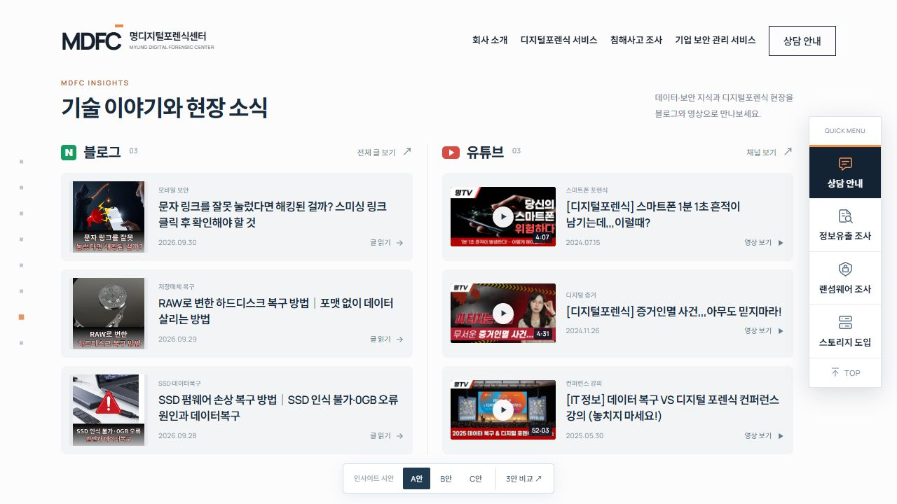
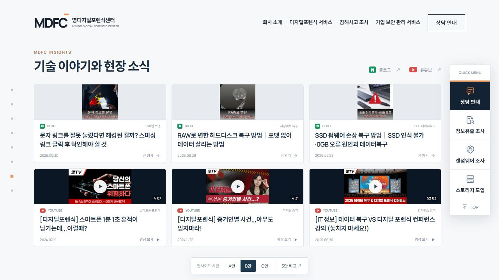
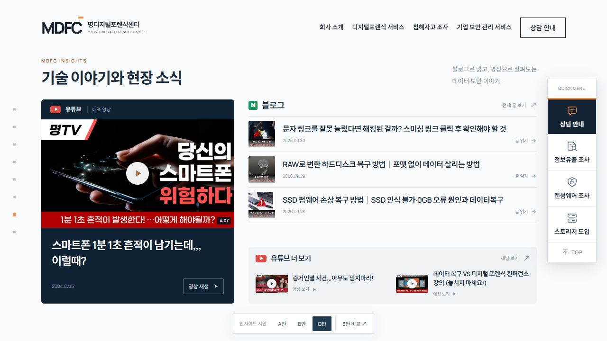

INSIGHTS / THREE STYLES
블로그 3개와 유튜브 3개를 서로 다른 배치로 비교해 보세요.

제목과 내용 탐색에 집중
블로그와 유튜브를 두 열로 나누고, 썸네일 옆에서 전체 제목을 읽습니다.

썸네일과 콘텐츠를 균형 있게
넓은 화면에 여섯 카드를 펼쳐, 이미지와 제목을 한눈에 살펴봅니다.

블로그와 유튜브를 분리한 구성
대표 영상을 크게 보여주고, 블로그 글과 추가 영상을 채널별로 나눠 살펴봅니다.